Keeping engagement alive beyond training
Ten weeks of training can quickly fade when everyday life takes over. We designed ways to keep people learning and sharing their skills with friends and neighbours, earning recognition along the way.
Building a culture of collective responsibility and mutual support for a more resilient society.
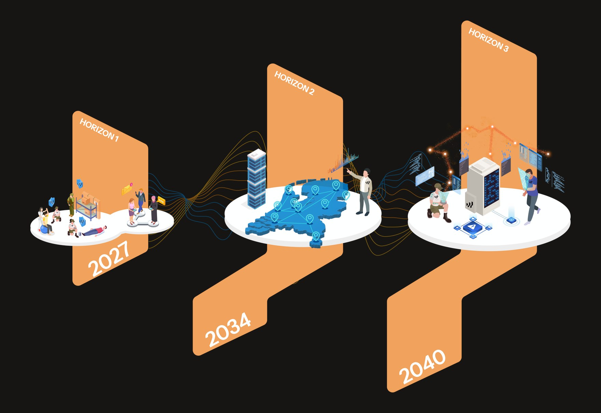
Strategic roadmapWith cyberattacks, disinformation and geopolitical tensions increasingly threatening national security, the Ministry of Defence’s NWT prepares citizens aged 18 - 54 to support national defence and resilience.
What the training covers. Over 10 weeks of Initial Military Training, participants learn first aid, fieldcraft and safe weapon handling, along with how to work as a team under pressure. Students can take it as a minor; employees can join alongside work.
But what happens after training? Graduates remain reservists, but there is little to sustain their connection with Defence or with one another. Without continued engagement, the skills, connections and collective potential developed during training risk going untapped.
Source: Defensie.nl, 12 November 2025 ↗
This project explores how NWT alumni can turn their training into lasting contributions to society, supporting community resilience in peacetime while maintaining their connection with Defence and readiness to respond in a crisis.
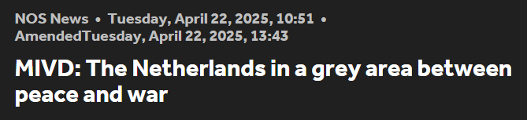
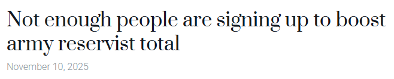
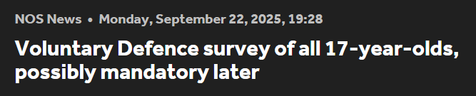
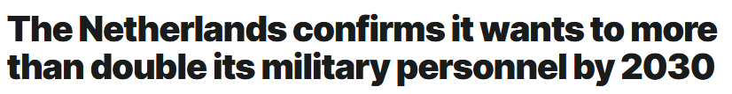
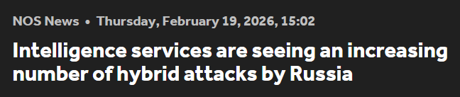
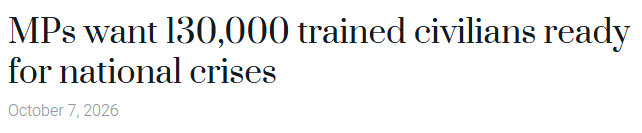
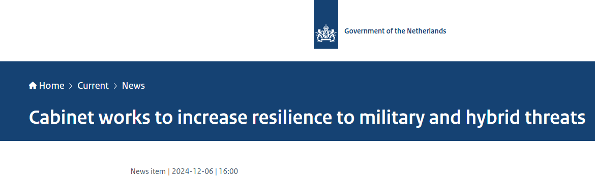
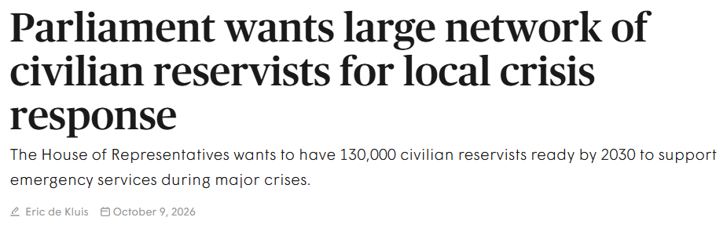
“We leven in Nederland niet in oorlog, maar ook niet meer in vrede. […] In tijden van vrede is de vraag wat Defensie kan doen voor de samenleving, maar nu vragen we ook wat de samenleving kan doen voor Defensie.”
“In the Netherlands, we are not at war, but we are no longer at peace either. […] In peacetime, the question is what Defence can do for society. Now we are also asking what society can do for Defence.”
Gen Z, the generation the NWT needs most, values autonomy, inclusivity and self-expression. At first glance, military service seems to pull against all three.
We mapped what Gen Z values from our foresight research, then set each value against what joining Defence asks of it, and what a network could offer instead.
Gen Z values: Making your own choices about your life and time
Joining Defence means: Following orders through a chain of command
The network offers: Pick your own learning path, and how much time you give
Gen Z values: Showing who you are through what you wear, post and stand for
Joining Defence means: Wearing the same uniform and doing the same drills as everyone
The network offers: Unlock skill badges that reflect your interests and specialisms
Gen Z values: Believing everyone belongs, whatever their body or mind
Joining Defence means: Passing psychological and physical tests to get in
The network offers: Train for other non-combat roles, such as cybersecurity and first aid
Gen Z values: Caring for others without ever causing harm
Joining Defence means: Learning to handle a weapon as part of protecting others
The network offers: Local missions about care, like first-aid lessons at your old school
Gen Z values: Keeping a calm, low-stress everyday life
Joining Defence means: Training that deliberately puts you under pressure
The network offers: Wellbeing advisors and psychologists in the network's team
Gen Z values: Knowledge and support you can reach whenever you need it
Joining Defence means: Training that stops after 10 weeks, with little to return to
The network offers: An app and local hubs that keep learning and expert support open long after the training
Gen Z values: Knowing how and why decisions are made
Joining Defence means: Accepting that much of what Defence does can't be shared
The network offers: Open hubs: approachable places anyone can walk into
Gen Z values: Keeping control over your own personal data
Joining Defence means: Being on a register of your skills and availability
The network offers: Data trust: alumni see and control what's shared
Each tension points to something the network can do differently.
As more people graduate from the NWT, they form a growing network that acts as the connection between citizens and Defence.
01The network grows
Each graduating cohort adds to the network, and each new alumnus extends its reach.
Benefit for Defence: A trained reserve that grows in every region, with every cohort.
02The network during peacetime
Learn. Alumni keep developing through further NWT courses, which keeps them engaged after graduating.
Share. They pass what they know, like first aid, CPR, blackout preparation and emergency drills, to the people around them: friends and family first, then their neighbourhood. Seeing a peer do this motivates others to join the NWT.
Benefit for the NWT programme: Continued learning keeps alumni engaged, and their example draws in new recruits.
03The network assisting in crisis
Look after. Alumni make sure friends, family and neighbours are safe and taken care of until emergency services arrive.
Benefit for citizens: Practical help from someone they know, close by when it matters.
With citizens cared for locally, the military can focus on the frontline.
The NWT can't build this network alone. Three partners each bring something that draws more people into it.
Can leverage partnerships with various ministries and institutions to ensure citizens are well trained and gives back to society
ECTS study credits for joining the NWT
Resilience education in the school curriculum
Key infrastructure and data on citizens registered in the area
Tax breaks and CSR recognition for companies whose employees train
Working back from 2040, our strategic roadmap plans how the network could grow over three horizons, each building on the last.
First connecting alumni through specialised training and the app, then growing a network of local hubs, and finally a trusted, automated network of qualified responders.
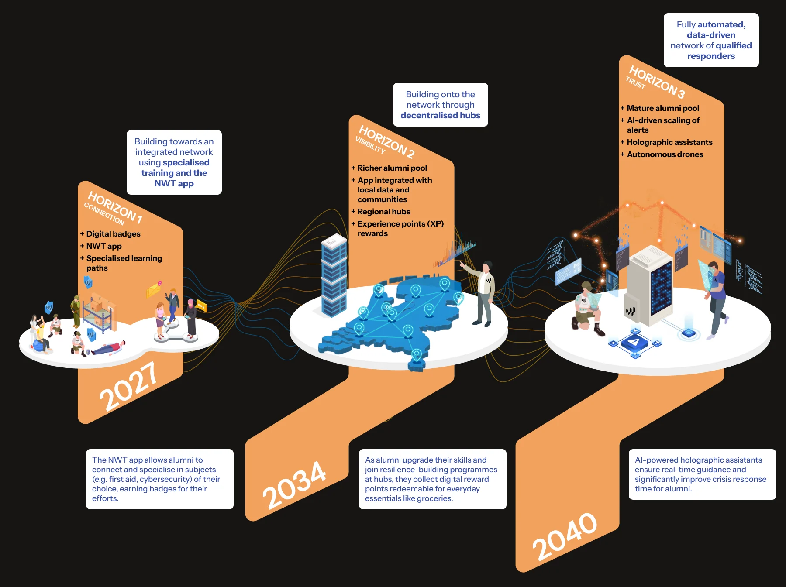
The strategic roadmap sets the direction. The tactical roadmap looks at what getting there might take.
For each horizon: the values and trends we expect to shape it, what the network offers in response, and the partners and expertise needed to deliver it.
Partner logos are shown for the purposes of this speculative roadmap only and do not imply any involvement or endorsement.
By 2040, the NWT empowers alumni to become vital connectors between citizens and the Ministry of Defence.
Anchored in safety-region hubs and enhanced through holographic wearables, they orchestrate coordinated crisis responses with precision and trust.
Together, they form a decentralised network where human resilience and intelligent technology intertwine, creating a nation that stands prepared, adaptive and united in both peacetime and crisis.
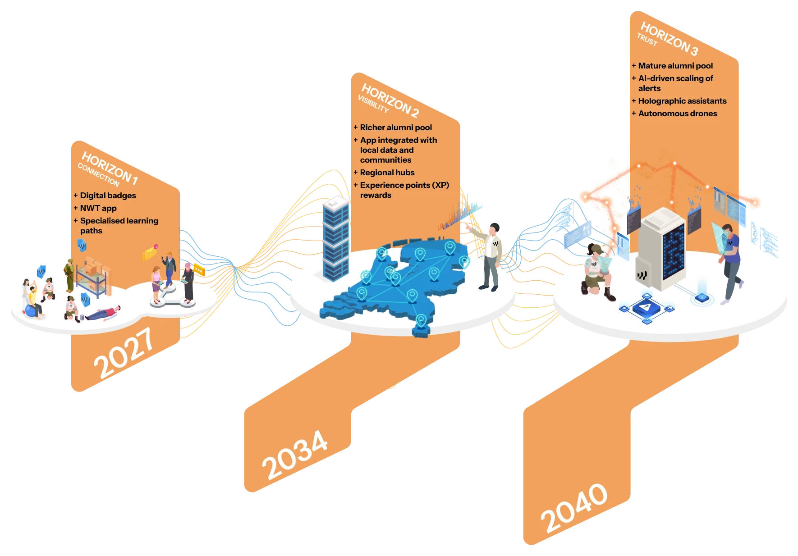
By 2040, today's Gen Z will be the ones who need to step up in a crisis, so their values shaped the vision. People want to feel connected; the technology just helps them do it better.
Ten weeks of training can quickly fade when everyday life takes over. We designed ways to keep people learning and sharing their skills with friends and neighbours, earning recognition along the way.
A vision for 2040 needs to feel achievable. We explored emerging technologies and the people already developing them, grounding each future step in real progress.
Would people know how to respond in an emergency, or freeze and wait for someone else to step in? We imagined a reservist helping a stranger through CPR, guided step by step by a wearable until help arrives.
In collaboration with the Nationale Weerbaarheidstraining (NWT) ↗